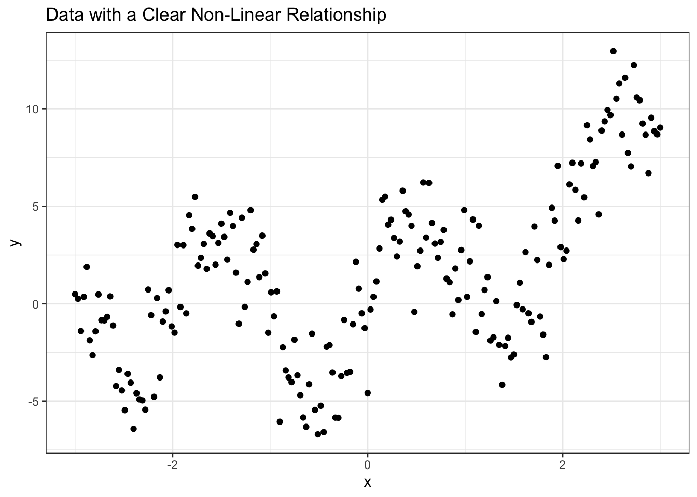
Notes for Lecture #11: Unit II. Regression: Higher and Higher – Feature Expansion Methods for Non-Linear Regression
Outline:
Today, we’re going to turn our focus to non-linear methods. Before we get into the details, it’s worth pausing to consider a few fundamental questions:
- Why would we want to fit a non-linear model?
- What do we expect to be the pros and cons of non-linear approaches?
- When should linear or non-linear methods be favored (as a rule of thumb?)
- How can we build on the frameworks we have developed up to this point?
Before we answer these, it’s worth taking a moment to note that non-linear models are not exactly a well-defined category, or at least one that it makes sense to talk about concretely. While linear models have simple standard characterizations, non-linear models are the ‘everything else’ bucket. (Think of an ‘Exotics’ vet who cares for all ‘non-dog’ animals. There is more diversity than standardization in that population.) While it can be useful to think about ‘non-linear models’ as a simple class, in practice we can’t really ever use ‘all non-linear models’ as that encompasses far too much. We will instead pick one or more relatively well-defined classes (\(K\)-NN, decision trees, neural networks, etc.).
For the why question, think back to where we started: we argued that, once we were ‘ERM-brained’, we had relationships like the following:
\[\min_{f \in \Fcal_1} \text{TrainingError}(f) \geq \min_{f \in \Fcal_2} \text{TrainingError}(f)\]
when \(\Fcal_2 \supseteq \Fcal_1\). That is, when we try out a larger set of models (\(\Fcal_2\)), we expect to get better training error and, if we can avoid various overfitting perils, we hope to get better test error (actual predictions) as well.
This perspective makes the benefits of looking at a wider set of models clear: potentially better performance, particularly if the world is ‘truly’ non-linear (as it always really is!), by i) bias reduction specifically; ii) just looking at a wider set of models generally. It also clarifies the potential cons: any meaningful set of non-linear models that we might investigate is larger than the set of linear models, so we have to be more aware of potential variance issues.
As always, when we consider a move towards the ‘high-variance’ end of the scale, we want to hope we have enough data to temper this variance: with enough data, variance is small (due to averaging and general statistics) and bias is small (due to a wide range of non-linear options) and things can turn out quite well for us. This suggests the following directions are more ‘non-linear’ friendly:
- taller data: as \(n \gg p\), the benefits of non-linear models are more easily realized
- less noise: as the signal grows stronger, we don’t have as much variance to worry about
So now that we have answered when and why, how might we fit non-linear models? There are many ways, but we’ve done all this work to understand and build tools for linear models, so it would be nice to expand upon that work rather than starting from scratch.
You’ve surely done some of this before! By ‘pre-processing’ or ‘feature engineering’ your data before fitting OLS, you’ve fit a model that was functionally non-linear even if it was computationally linear. And that’s actually quite a sweet spot where we can start our search.
To remind you:
If we know that this data is generated from an \(x^2\) and a \(\sin(x)\) term, we’re good to go:
library(broom)
# Recall that we have to use poly() here to fit a polynomial term
# x^2 just fits the 'iteraction' of x with itself, which is just x
nl_ols <- lm(y ~ x + poly(x, 2) + sinpi(x), data=nl_data)
nl_ols |> augment() |>
ggplot(aes(x=x)) +
geom_point(aes(y=y)) +
geom_line(aes(y=.fitted), color="red4") +
xlab(expression(x)) +
ylab(expression(y)) +
ggtitle("OLS + Feature Expansion Recovers Non-Linear Relationships") +
theme_bw()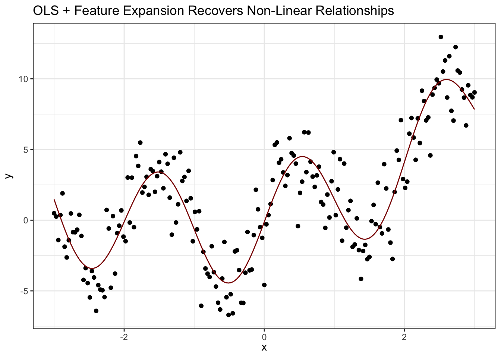
This is all well and good, but we definitely cheated here. We knew that the model had an \(x^2\) and a \(\sin(x\pi)\) term and used that to build our features. In practice, we are rarely so lucky!
So what can we do? Obviously, trying all possible functions isn’t great.1 But we, as always, get helped out by the beauty of math. We don’t really need to get the function ‘right’, we just need to get close to it. And, from calculus, we know that if we fit something like a power series, we can capture any smooth function.
Of course, a true power series is infinite, but maybe with enough terms we’ll get close. (Remember that the later terms of a power series have a factorial in the denominator, so they can get small quickly).
Let’s try this here:
library(glue)
library(patchwork)
map(1:8, \(k){
lm(y ~ x + poly(x, k), data=nl_data) |>
augment() |>
ggplot(aes(x=x)) +
geom_point(aes(y=y)) +
geom_line(aes(y=.fitted), color="red4") +
xlab(expression(x)) +
ylab(expression(y)) +
ggtitle(glue("{k}-Order Power Series Fit")) +
theme_bw()
}) |> reduce(`+`)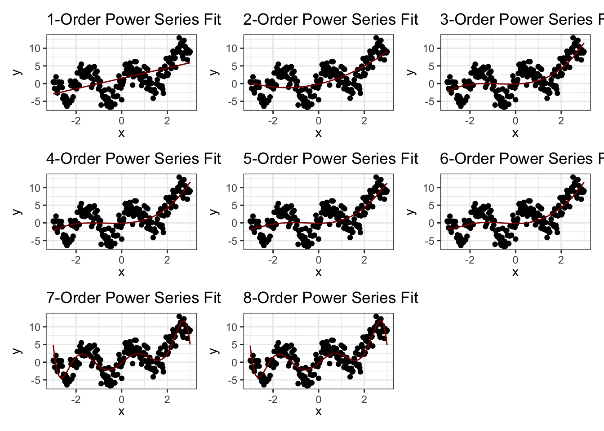
Ok, as we fit higher powers we are getting better and better. But should we trust this? Sadly, not really. Instead of looking at in sample performance, let’s go out of sample.
# Same as before, but now with different test and training data
# and a bit more noise
nl_data <- data.frame(x=seq(-3, 3, length.out=201)) |>
mutate(Ey = f(x),
y = Ey + rnorm(Ey, sd=5))
map(1:25, \(k){
map(1:100, \(n){
nl_test <- data.frame(x=seq(-3, 3, length.out=201)) |>
mutate(Ey = f(x),
y = Ey + rnorm(Ey, sd=5))
lm(y ~ x + poly(x, k), data=nl_data) |>
augment(newdata=nl_test) |>
summarize(mse = mean(.resid^2)) |>
mutate(k=k)
}) |>
bind_rows() |>
summarize(k=first(k),
mse_mean = mean(mse),
mse_sd = sd(mse),
mse_se = mse_sd / sqrt(n() - 1))
}) |>
bind_rows() |>
ggplot(aes(x=k,
y=mse_mean,
ymin=mse_mean-mse_se,
ymax=mse_mean+mse_se)) +
geom_point(color="red4") +
geom_errorbar() +
xlab("Polynomial Order") +
ylab("Test MSE")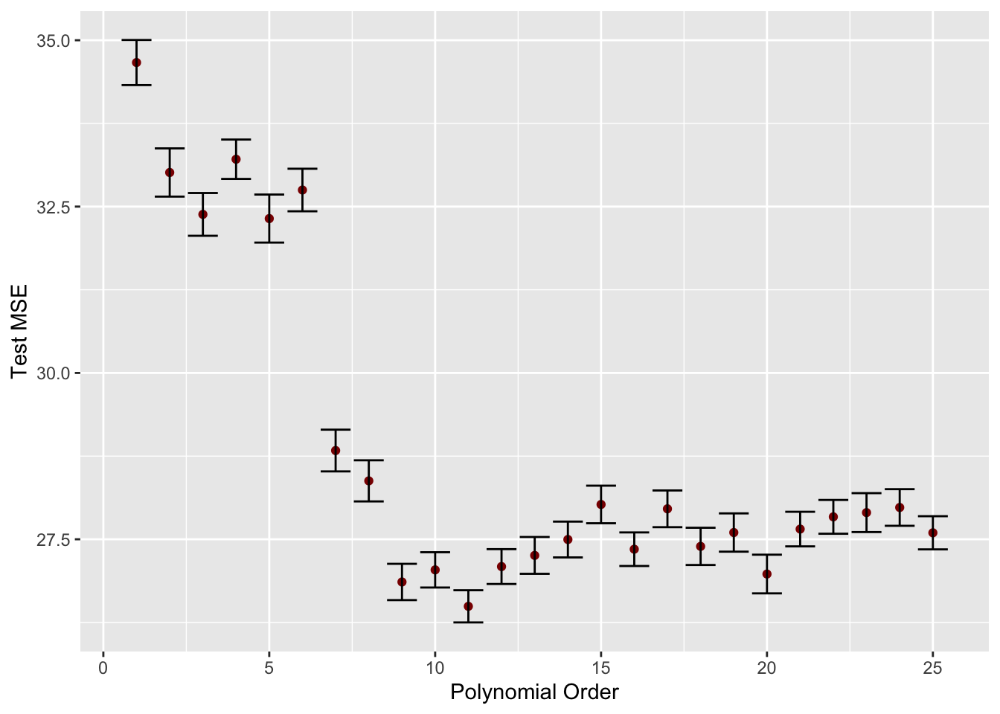
So this isn’t a panacea. And remember that this is still not that hard a problem. Still, I did have to work a bit to make this fail, so it’s not a terrible idea.
Let’s think a bit more deeply about the ways in which this can go wrong:
We’ve only looked at one feature. Even with polynomial powers, we’re still in a pretty ‘low-dimensional’ setting. As we include more variables, the number of derivatives grows quickly. (In general, if we have \(p\) variables and want to use \(k\) derivatives, we have something like \(\binom{p}{k}\) resulting features. For \(p=10\) variables and \(k=3\) that’s already 120 terms.)
-
We’ve only looked at a relatively small region around 0. We know that, as we move away from 0, our power series is less accurate and/or requires more terms.
We see this clearly if we extend our scenario from above ‘outwards’:
# Same as before, but now with a wider range on x
nl_data <- data.frame(x=seq(-15, 15, length.out=201)) |>
mutate(Ey = f(x),
y = Ey + rnorm(Ey, sd=5))
map(2:20, \(k){
map(1:100, \(n){
nl_test <- data.frame(x=seq(-15, 15, length.out=201)) |>
mutate(Ey = f(x),
y = Ey + rnorm(Ey, sd=5))
lm(y ~ x + poly(x, k), data=nl_data) |>
augment(newdata=nl_test) |>
summarize(mse = mean(.resid^2)) |>
mutate(k=k)
}) |>
bind_rows() |>
summarize(k=first(k),
mse_mean = mean(mse),
mse_sd = sd(mse),
mse_se = mse_sd / sqrt(n() - 1))
}) |>
bind_rows() |>
ggplot(aes(x=k,
y=mse_mean,
ymin=mse_mean-mse_se,
ymax=mse_mean+mse_se)) +
geom_point(color="red4") +
geom_errorbar() +
xlab("Polynomial Order") +
ylab("Test MSE") +
scale_y_log10()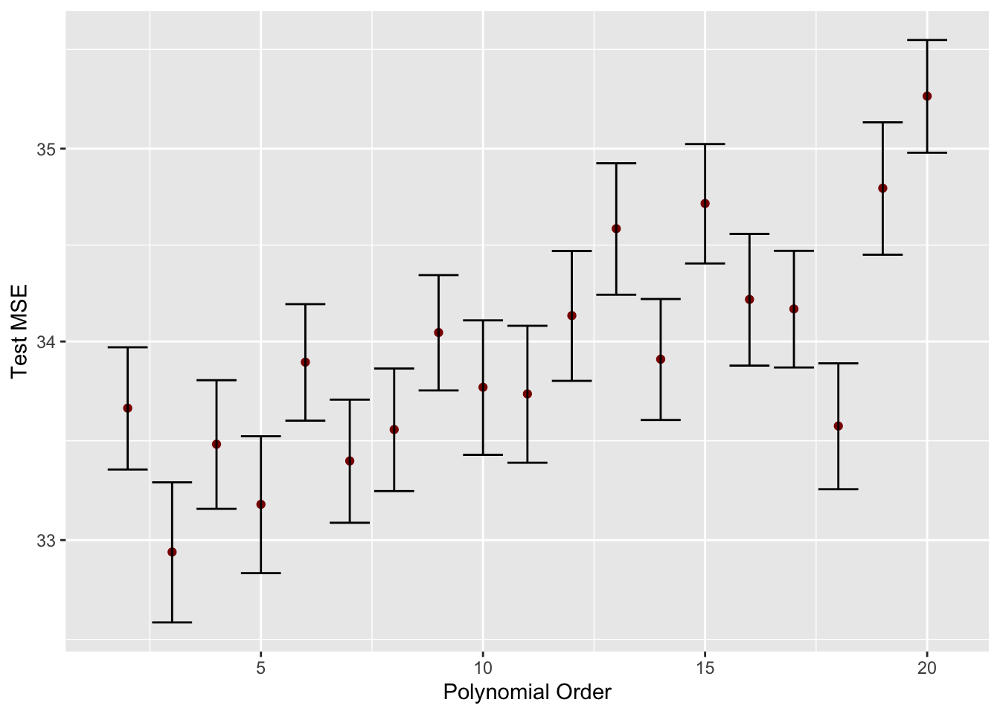
This is notably worse! Even though the data size, noise level, etc didn’t change. What went wrong?
As we move away from \(x\), the difference between \(1.01 x^k\) and \(0.99 x^k\) becomes bigger quickly; while at \(k=1\) (linear models), it’s basically fixed at \(0.02x\) or 2% relative difference. This becomes increasingly important if we ever want to extrapolate. If we observe \(x\) in some range and look at ‘test’ \(x\) outside that range, things really go to heck in a handbasket:
# Same as before, but now with different training and test ranges for x to
# make the extrapolation challenge more acute
nl_data <- data.frame(x=seq(-10, 10, length.out=201)) |>
mutate(Ey = f(x),
y = Ey + rnorm(Ey, sd=5))
map(2:20, \(k){
map(1:100, \(n){
nl_test <- data.frame(x=seq(-15, 15, length.out=201)) |>
mutate(Ey = f(x),
y = Ey + rnorm(Ey, sd=5))
lm(y ~ x + poly(x, k), data=nl_data) |>
augment(newdata=nl_test) |>
summarize(mse = mean(.resid^2)) |>
mutate(k=k)
}) |>
bind_rows() |>
summarize(k=first(k),
mse_mean = mean(mse),
mse_sd = sd(mse),
mse_se = mse_sd / sqrt(n() - 1))
}) |>
bind_rows() |>
ggplot(aes(x=k,
y=mse_mean,
ymin=mse_mean-mse_se,
ymax=mse_mean+mse_se)) +
geom_point(color="red4") +
geom_errorbar() +
xlab("Polynomial Order") +
ylab("Test MSE") +
scale_y_log10()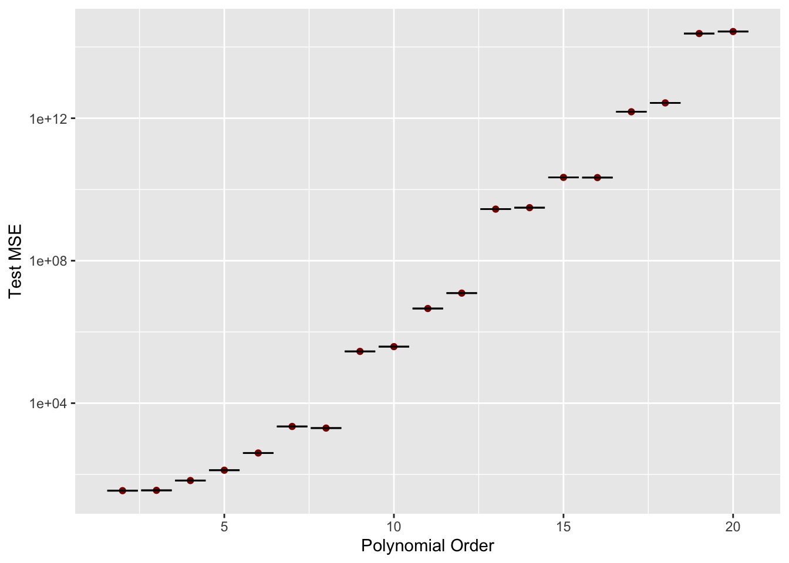
Put another way, while it’s always harder to fit a model over a wider range of inputs, it’s much harder with high powers because small changes to inputs or to coefficients can yield big changes in the output. To make this ‘polynomials’ idea really hum, we’d like to have something that is ‘polynomial’ in a region, but linear outside that region.
Visually, instead of building our model out of terms like:
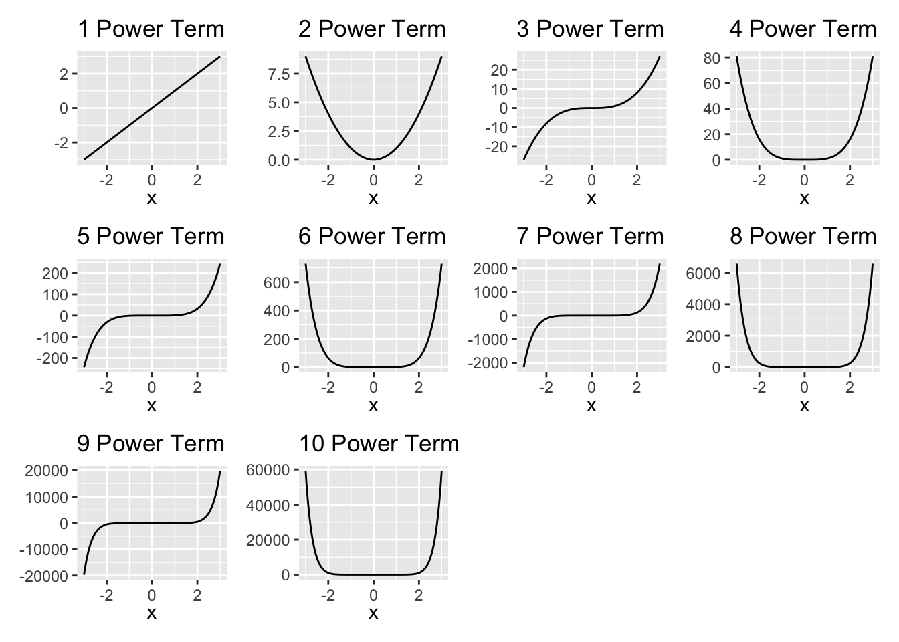
we’d really like to use terms more like:
Don't know how to automatically pick scale for object of type
<bs/basis/matrix>. Defaulting to continuous.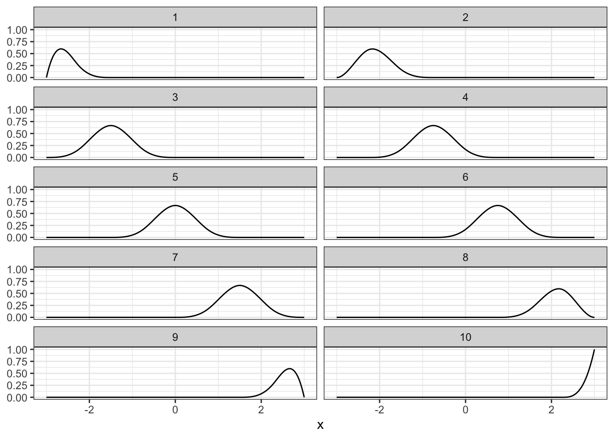
Here, we have lots of ‘locally nonlinear’ terms that we can use to build our model. And, notably, they are only non-zero in a small region. Hence, using one term to calture some wiggles in the \(x \approx 2\) region doesn’t force any craziness on use far away at \(x \approx -5\).2
These types of ‘local polynomials’ are called splines and they are wonderful. Instead of fitting a very big polynomial and hoping it works everywhere, we can fit several little polynomials. This gives us advantages in adaptivity (different models in different areas) and stability - we don’t need crazy power terms.
The use of splines suggests a ‘mildly non-linear’ class of functions that take the form:
\[f(\bx) = \sum_{i=1}^p f_i(x_i)\]
where each individual \(f_i\) is a smooth spline-y function of one input variable at a time. The resulting term is definitely non-linear, but it’s a linear sum of non-linear terms, so we call this an additive model. They represent our first - and often one of our best - forays into non-linear modeling.
Practically, there’s a lot of book-keeping in setting these up, but software can handle it nicely for us:
library(mgcv)Loading required package: nlme
Attaching package: 'nlme'The following object is masked from 'package:dplyr':
collapseThis is mgcv 1.9-4. For overview type '?mgcv'.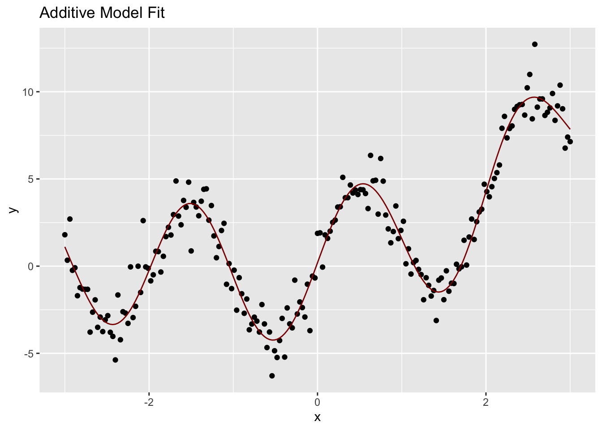
Here, note that we specify our model with s(x) to indicate that we want a smooth (as opposed to purely linear) function of \(x\). If we look at the output of gam directly, we see it has actually done several clever things:
Family: gaussian
Link function: identity
Formula:
y ~ s(x)
Estimated degrees of freedom:
8.97 total = 9.97
GCV score: 1.014547 Notably, we see that it internally used a form of generalized cross-validation (GCV) to automatically determine the ‘optimal’ amount of wigliness. Very nice!
This extends nicely to more complex relationships. Let’s recall our NYSED data from the first problem set:
Rows: 9721 Columns: 34
── Column specification ────────────────────────────────────────────────────────
Delimiter: ","
chr (6): ASSESSMENT_NAME, SCHOOL_NAME, DISTRICT_NAME, COUNTY_NAME, DISTRICT...
dbl (28): PERCENT_PROFICIENT, NUMBER_TOOK_EXAM, ATTENDANCE_RATE, PERCENT_FRE...
ℹ Use `spec()` to retrieve the full column specification for this data.
ℹ Specify the column types or set `show_col_types = FALSE` to quiet this message.TODO
Older Notes
These notes are from an older version of this class They are a bit beyond the level expected of you, but I provide them in case they may be useful.
Non-Linear Methods
We have now developed a variety of tools for linear regression and for linear classification. These work well - particularly in low SNR (high dimension / low sample size) scenarios - but they have a necessarily limited capacity. When we have lots of training data, how can we go further? By using non-linear methods of course!
In this section we introduce several methods for non-linear regression. These techniques can all be easily adapted to classification, but we’ll develop them for regression as the math is a bit simpler. We also pause to consider when non-linear methods can actually be expected to outperform linear methods.
Also note that we are arguably being a bit ‘sloppy’ about what we mean by ‘linear’ methods. For purposes of these notes, we define a ‘linear’ method as one where the fitted model has a linear response to changes in the inputs; formally, one where
\[\frac{\partial y}{\partial x_i} = \beta_i \text{ (a constant) for all } i \in \{1, \dots, p\}\]
This definition includes things like best-subsets and lasso regression, which are not linear functions of \(\by\), but excludes things like polynomial regression.3 In the above definition, each \(\beta_i\) is essentially a regression coefficient, and values of \(i\) where \(\beta_i = 0\) are non-selected variables if we are using a sparse method.
Non-Linearity via Linear Combination of Non-Linear Parts
We have spent the previous few weeks developing a set of tools for building linear models of \(\by\). Specifically, we have sought ways to approximate \(\E[y | \bx]\) as a weighted sum of each \(x_i\):
\[ \E[y | \bx] \approx \langle \bx, \hat{\bbeta} \rangle = \sum_{i=1}^p x_i \hat{\beta}_i\]
For situations where the relationship is nearly (or even truly) linear, this approximation can be quite useful and good estimates of the \(\beta_i\) coefficients can lead to accurate estimates of \(\E[y | \bx]\), and ultimately accurate prediction of test set response \(\by\). Using the bias-variance decomposition, we have seen that it is often worthwhile to accept a bit of bias in estimation of each \(\beta_i\) if it is compensated by a worthwhile reduction in the variance of \(\beta_i\).
We can further refine this equality by decomposing bias a bit further:
\[\MSE = \text{Irreducible Error} + \text{Variance} + \text{Model Bias}^2 + \text{Estimation Bias}^2\]
Here, we have decomposed \(\text{Bias}^2\) into two terms:
- \(\text{Model Bias}^2\): a measure of the systematic error arising from use of a linear model to predict a non-linear DGP
- \(\text{Estimation Bias}^2\): a measure of the systematic error arising from use of a regularized estimation procedure which exhibits shrinkage
Put another way, “Model Bias” results from use of a linear model when something non-linear should be used, while “Estimation Bias” arises from the use of a biased method (like ridge regression) instead of something nominally unbiased like OLS. For the previous two weeks, we have mainly focused on linear models for linear DGPs, so model bias has been zero. If we expand our gaze to non-linear DGPs, we have to deal with model bias a bit more directly. As with estimation bias, it is frequently worthwhile to accept model bias to reduce variance; see more discussion below.
Polynomial Expansion
You have likely already seen polynomial expansion (or polynomial regression) in previous courses. Essentially, PE fits a low(-ish)-order polynomial instead of a line to data. More formally, let \(f(\bx) \equiv \E[y|\bx]\) be the regression function (best possible predictor) that week seek to approximate from noisy observations. Standard linear regression essentially seeks to fit a first-order Taylor approximation of \(f\) around some point \(\overline{\bx}\):
\[\begin{align*} f(\bx) &\approx f(\overline{\bx}) + \nabla_f(\bx_0)^{\top}(\bx - \overline{\bx}) \\ &= f(\overline{\bx}) + \sum_{i=1}^p \left. \frac{\partial f}{\partial x_i}\right|_{x = \overline{x}_i}(x_i - \overline{x}_i) \end{align*}\]
If we rearrange this a bit, we get
\[\begin{align*} f(\bx) &\approx f(\overline{\bx}) + \sum_{i=1}^p \left. \frac{\partial f}{\partial x_i}\right|_{x = \overline{x}_i}(x_i - \overline{x}_i) \\ &= \underbrace{\left(f(\overline{\bx}) - \sum_{i=1}^p \left.\frac{\partial f}{\partial x_i}\right|_{x_i=\overline{x}_i}\overline{x}_i\right)}_{=\beta_0} + \sum_{i=1}^p \underbrace{\left.\frac{\partial f}{\partial x_i}\right|_{x_i=\overline{x}_i}}_{=\beta_i} x_i\\ &= \beta_0 + \sum_{i=1}^p x_i \beta_i \end{align*}\]
so we see that the regression coefficients are more-or-less the (suitably-averaged) partial derivatives of \(f\) while the intercept is the value of \(f\) at the center of our expansion (\(f(\overline{\bx})\)) plus some differential adjustments. Note that, if the variables \(\bX\) are centered so that \(\E[\bX] = \bzero\), the intercept is exactly the average value of \(f\), as we would expect.
Clearly, this linear approximation will do better in the situations where Taylor expansions generally perform better: when i) the derivative of \(f\) is roughly constant and ii) the higher order terms are small. This makes sense: if \(f\) is very-close-to-linear, there is minimal loss from fitting a linear approximation to \(f\); if \(f\) is very non-linear, however, a linear approximation can only be be so good, and we are saddled with significant model bias.
If we want to mitigate some of that model bias, we can choose to use a higher-order Taylor series. If we examine a second order Taylor series, we get a similar approximation as before, where \(\Hcal\) denotes the Hessian matrix of second derivatives:
\[\begin{align*} f(\bx) &\approx f(\overline{\bx}) + \nabla_f(\bx_0)^{\top}(\bx - \overline{\bx}) + \frac{1}{2}(\bx - \overline{\bx})^{\top}\Hcal_f(\overline{\bx})(\bx - \overline{\bx})^{\top} \end{align*}\]
After some rearrangement this becomes:
\[f(\bx) \approx \beta_0 + \sum_{i=1}^p \frac{\partial f}{\partial x_i} x_i +\sum_{i=1}^p \frac{\partial^2 f}{\partial x_i^2} x_i^2 + \sum_{\substack{i, j = 1 \\i \neq j}}^p \frac{\partial^2 f}{\partial x_i \partial x_j} x_ix_j\]
We recognize the constant term (intercept) and first order terms (linear slopes) from before, but now we have added two types:
- Second order terms (\(x_i^2\)): these capture higher order non-linearities in a single variable. For example, if \(y = x^2\), then the ‘true fit’ really lies in the second order term \(\partial^2f / \partial x^2 = 2\) instead of any linear approximation
- Cross terms (\(x_ix_j\)): these capture non-linear (non-additive) multi-variate relationships between features. You may have seen these before as interaction terms.
Rules of thumb vary as to which set of terms are more important. Historically, statisticians have tended to put in the interaction (cross) terms first, though this is far from universal practice. In particular, when dealing with ‘binary’ variables, the higher order term is unhelpful: if a feature is \(0/1\) (did the patient receive the drug or not?), adding a squared term has no effect since \(0^2 = 0\) and \(1^2 = 1\).
Regardless, this is why we sometimes use ‘polynomial expansion’ of our original variables. We are trying to capture the higher-order (non-linear) terms of the Taylor approximation.
It is worth thinking about what happens when we add higher-order terms to our model. In particular, note that we i) pick up some correlation among features; and ii) we will generally have more variance since we have more features. In practice, the correlation isn’t too much of a problem and the actual polynomials fit by, e.g., poly in R are modified to remove correlation. The variance however can be a more significant problem.
Let’s see this in action. Let’s first consider fitting polynomial regression to a simple (univariate) non-linear function: \(f(x) = \sqrt{|x|^3 + 5} * \cos(x)\)
This is not too non-linear. It’s still very smooth (analytic in the jargon) and should be relatively easy to fit. Let’s also generate some noisy observations of this function.
n <- 25
# Linear regression doesn't care about the order of our data, but plotting does
# so sorting gives better visuals
x <- sort(runif(n, 2, 10))
Ey <- sqrt(abs(x)^3 + 5) * cos(x)
y <- Ey + rnorm(n, sd=3)
x_grid <- seq(min(x), max(x), length.out=501)
Ey_grid <- sqrt(abs(x_grid)^3 + 5) * cos(x_grid)
plot(x, y)
lines(x_grid, Ey_grid)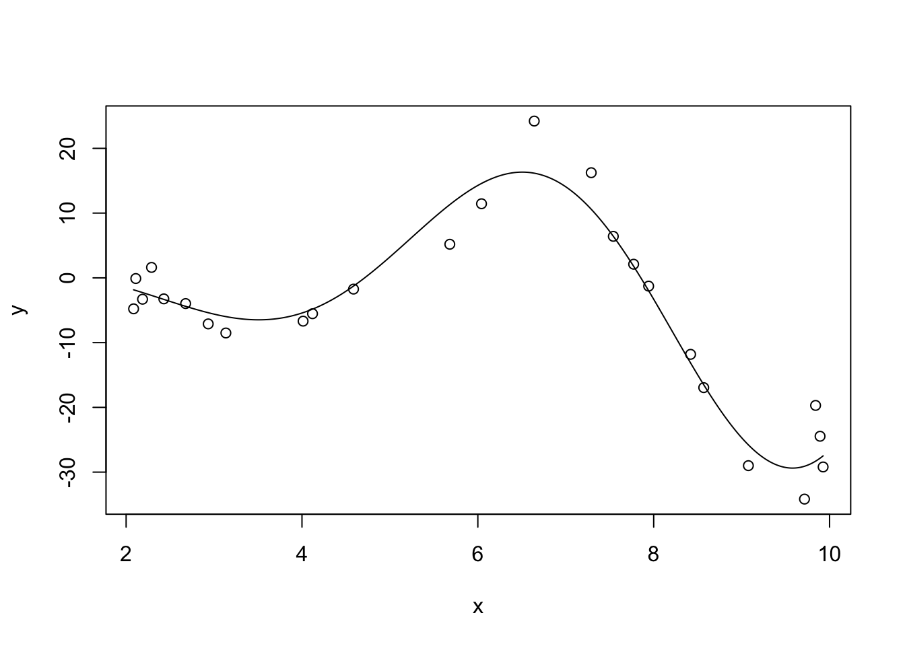
We can now fit some linear models to this data (shown in color): we use R’s built-in poly function to automatically create the polynomials we seek. You can think of poly(x, k) as creating k features \(x^1, x^2,
\dots, x^k\) but it actually does something a bit more subtle under the hood to make model fitting a bit more numerically stable.
plot(x, y)
lines(x_grid, Ey_grid)
for(k in 1:5){
m <- lm(y ~ poly(x, k))
yhat <- predict(m, data.frame(x = x_grid))
lines(x_grid, yhat, col=k+1)
}
legend("bottomleft",
c("True Regression Function",
"First Order (Linear) Fit",
"Second Order (Quadratic) Fit",
"Third Order (Cubic) Fit",
"Fourth Order (Quartic) Fit",
"Fifth Order (Quintic) Fit"),
col=1:6, lty=1)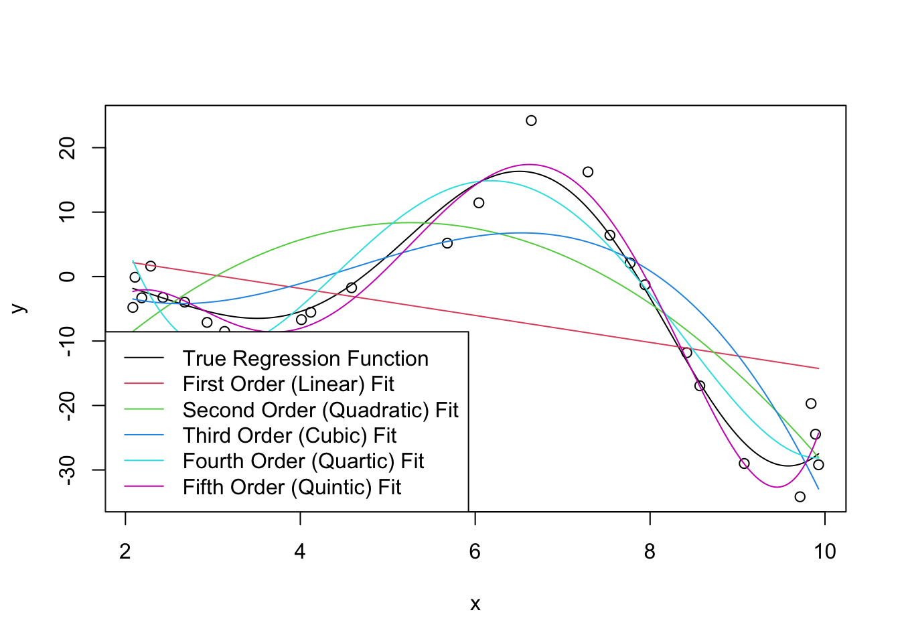
Clearly, as we increase the order of the polynomial, we get a better (in-sample) fit. This makes sense: we know that more features gives us a better fit all else being equal, so what’s the issue?
As usual, the issue occurs for extrapolation. You can actually see some issues already beginning to manifest at the ends of our prediction intervals: the higher-order polynomials go radically different directions as we extrapolate and even the ‘best fit’ (quintic) looks like it’s going to be too steep as we go further.
Let’s expand the prediction region for these fits:
x_pred <- seq(-5, 15, length.out=501)
Ey_pred <- sqrt(abs(x_pred)^3 + 5) * cos(x_pred)
plot(x_pred, Ey_pred, type="l")
points(x, y)
for(k in 1:5){
m <- lm(y ~ poly(x, k))
yhat <- predict(m, data.frame(x=x_pred))
lines(x_pred, yhat, col=k+1)
}
legend("bottomleft",
c("True Regression Function",
"First Order (Linear) Fit",
"Second Order (Quadratic) Fit",
"Third Order (Cubic) Fit",
"Fourth Order (Quartic) Fit",
"Fifth Order (Quintic) Fit"),
col=1:6, lty=1)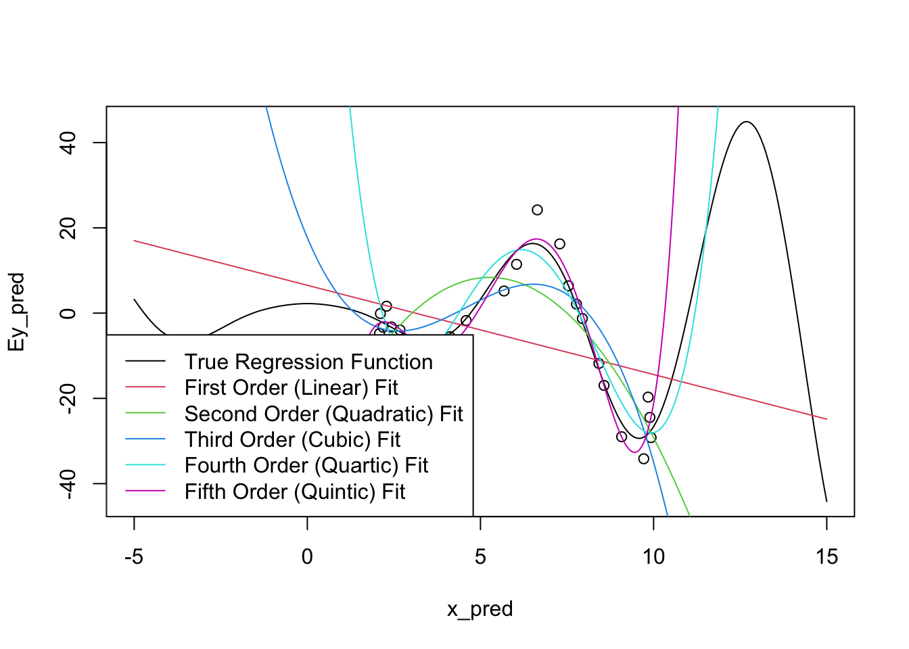
There’s some problems!
To be fair, it is a bit unreasonable to expect these models to perform too well outside of our original sampling area. What’s more worrying is that the extrapolations don’t just miss the curves of the true regression function, they actually create their own even more intense wiggles.
We can also manifest this without extrapolation by fitting very high-order polynomials:
k <- 9
m <- lm(y ~ poly(x, degree=10 + k, raw=TRUE))
yhat <- predict(m, data.frame(x = x_grid))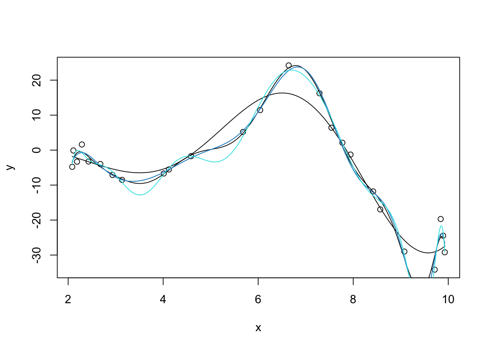
Note that we have to use raw=TRUE here to avoid R complaining about having too-high a degree in the polynomial. (R gives an error about “unique points” but the real issue is one about matrix rank, not ties in x.) I’m also surpressing some warnings here about a sub-standard fit.
So how can we address this ‘over-wiggliness’?
As we discussed last time, we need to use a different set of functions: one that is smooth (like polynomials), but not too-high order. It would also be really nice if we could get something ‘adaptive’ - allowing for more wiggliness where we have more data (and we need more wiggliness) and less wiggliness where we don’t have enough data (fall-back to linearity). ### Local Linear Models
One way to do this is the idea of “local linear (polynomial) models.” Instead of fitting a single (global) line, we can fit different lines in different parts of our data: that way, we can get an upward line when the true (non-linear) relationship is increasing and a downward line when the true relationship is decreasing. Or at least that’s the hope!
plot(x, y)
lines(x_grid, Ey_grid)
# Divide our data into five 'buckets' and fit sub-models
# This works because we've already sorted our data
# (What would happen if we hadn't?)
for(k in 1:5){
xk <- x[(5 * k - 4):(5*k)]
yk <- y[(5 * k - 4):(5*k)]
mk <- lm(yk ~ xk)
y_hat <- predict(mk)
lines(xk, y_hat, col="red4")
}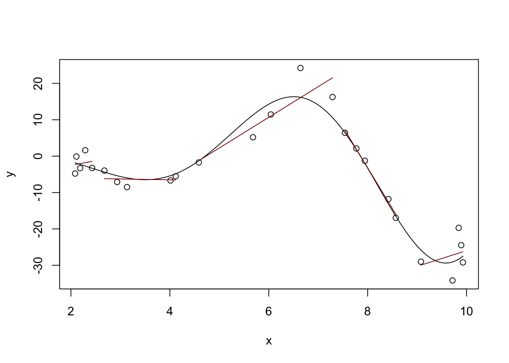
Definitely some rough edges here - particularly in the areas between our buckets, but we’re on a good path. The locfit package will help us with the details:
Estimation type: Local Regression
Call:
locfit(formula = y ~ lp(x))
Number of data points: 25
Independent variables: x
Evaluation structure: Rectangular Tree
Number of evaluation points: 5
Degree of fit: 2
Fitted Degrees of Freedom: 4.481 plot(x, y)
lines(x_grid, Ey_grid)
y_hat <- predict(m, data.frame(x = x_grid))
lines(x_grid, y_hat, col="red4")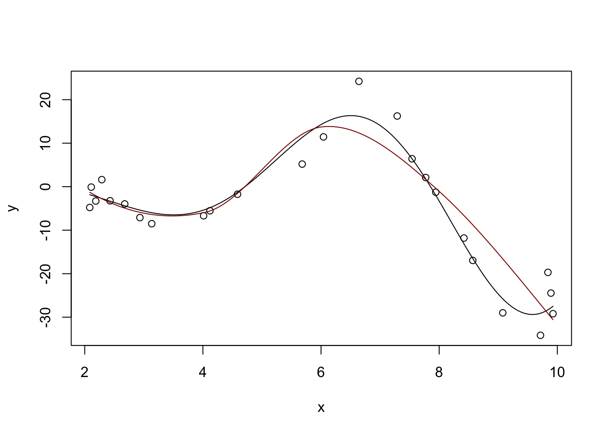
Not perfect, but pretty nice compared to what we had before.
You can also see a discussion of the “degrees of freedom” in the model output. This is not exactly the DoF you learned in earlier classes, but it’s sort of “morally equivalent.” This local fit is about as flexible as a 4th degree polynomial would be for this problem. Even though this model is made out of quadratics, it’s more flexible than a single quadratic. But we avoid the extreme variability associated with a polynomial of that high order. Win-win!
We can tweak some parameters of the local fit to get different responses: the big ones are the degree (deg) and the number of neighbors to use.
?lpEstimation type: Local Regression
Call:
locfit(formula = y ~ lp(x, deg = 4))
Number of data points: 25
Independent variables: x
Evaluation structure: Rectangular Tree
Number of evaluation points: 5
Degree of fit: 4
Fitted Degrees of Freedom: 6.066 plot(x, y)
lines(x_grid, Ey_grid)
y_hat <- predict(m, data.frame(x = x_grid))
lines(x_grid, y_hat, col="red4")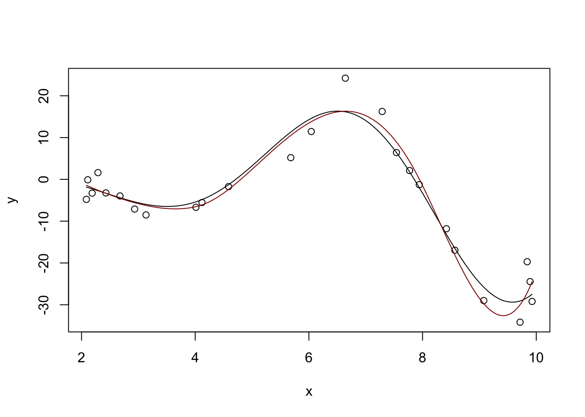
Pretty nice. If we ‘turn down’ the number of neighbors used:
Estimation type: Local Regression
Call:
locfit(formula = y ~ lp(x, nn = 0.2, deg = 4))
Number of data points: 25
Independent variables: x
Evaluation structure: Rectangular Tree
Number of evaluation points: 25
Degree of fit: 4
Fitted Degrees of Freedom: 18.533 plot(x, y)
lines(x_grid, Ey_grid)
y_hat <- predict(m, data.frame(x = x_grid))
lines(x_grid, y_hat, col="red4")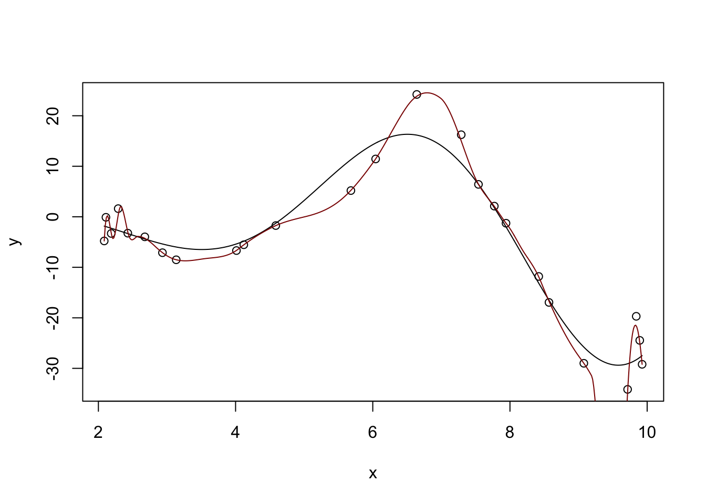
Too far - super crazy! But not entirely unexpected - we know that \(K\)-Nearest Neighbors for small \(K\) has a huge variance.
Too far!
The loess function in base R does this very nicely as well without requiring additional packages. For practical work, it’s a very nice tool for univariate modeling.4
Call:
loess(formula = y ~ x)
Number of Observations: 25
Equivalent Number of Parameters: 4.07
Residual Standard Error: 6.426
Trace of smoother matrix: 4.44 (exact)
Control settings:
span : 0.75
degree : 2
family : gaussian
surface : interpolate cell = 0.2
normalize: TRUE
parametric: FALSE
drop.square: FALSE plot(x, y)
lines(x_grid, Ey_grid)
y_hat <- predict(m, data.frame(x = x_grid))
lines(x_grid, y_hat, col="red4")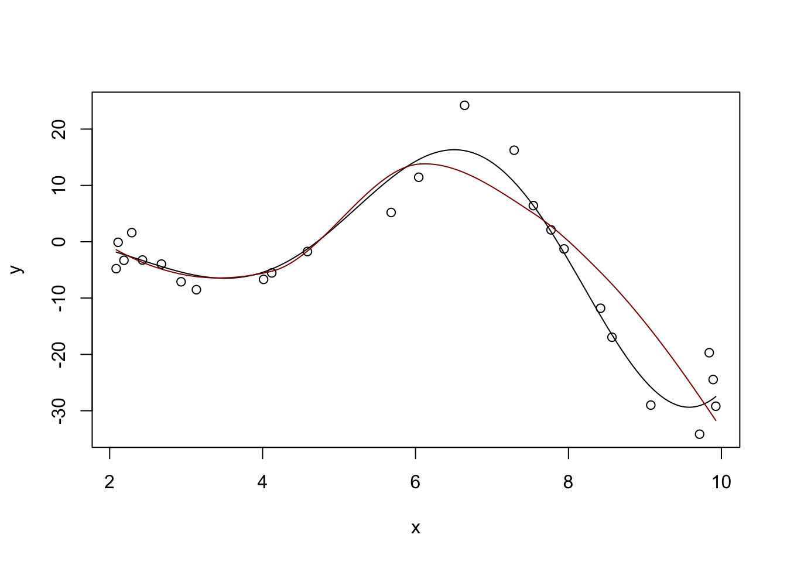
Spline Regression (Additive Models)
Splines
We can generalize this idea a bit using splines. Splines are functions that solve a penalized approximation problem:
\[\hat{f} = \argmin_{f} \frac{1}{2n} \|y - f(x)\|_2^2 + \lambda \int |f''(x)|^2 \text{d}x\]
Here we are saying we’ll take any function (not just a polynomial) that achieves the optimal trade-off between data fit (first / loss term) and not being too rough (second / penalty term).
Why is this the right penalty to use? In essence, we are trying to penalize ‘deviation from linearity’ and since linear functions have second derivative 0 (by definition) the integral of the second derivative gives us a measure of non-linearity.
In some remarkable work, Grace Wahba and co-authors showed that the solutions to that optimization problem are piecewise polynomials with a few additional constraints - these functions are splines. In addition to piecewise polynomialness, splines also guarantee:
- continuity of the function and its derivatives
- linearity outside the range of data fit (‘natural splines’)
Because splines not only match the value of the function at the knots (places where the ‘pieces’ match up) but also the derivatives, they are very smooth indeed.
Stepping back, splines are just a different sort of feature engineering. Instead of using polynomial basis functions (\(x^1, x^2, \dots, x^k\)), splines use a much smoother basis and hence give smoother results, avoiding the ‘wiggles’ problem we saw above.
R provides the basic tools for spline fitting in the splines package. For real work, you almost surely want to use the advanced functionality of the mgcv package. For more on splines and models using them (‘additive models’), see this online course.
We can see that individual splines are quite nice little functions and usually are only non-zero on small regions:
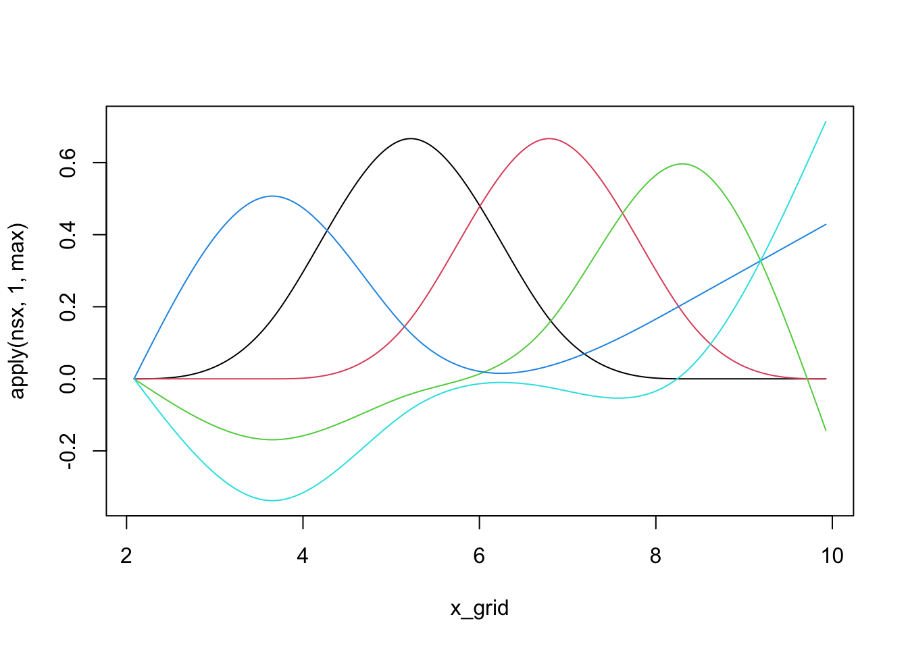
We can use linear combinations of these ‘bumps’ to fit non-linear functions, including our example from above:
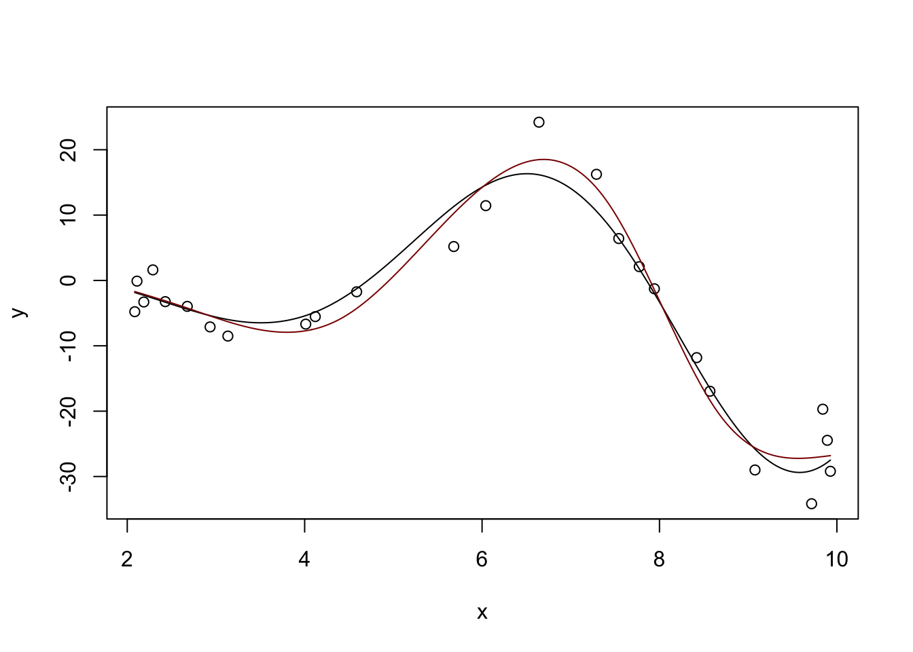
(This basically matches what we had before with \(\text{DoF} \approx 4.7\), but you can get different answers by messing with the df parameter here.)
Our predicted response is actually the sum of the individual spline effects:
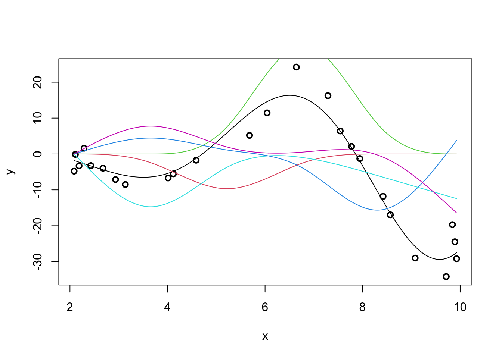
If we were able to sum up the colored lines, we would get the black line back.
We can also see that natural splines give smooth predictions outside the range of the original data:
y_pred <- predict(m, data.frame(x = x_pred))
plot(x_pred, Ey_pred, type="l")
lines(x_pred, y_pred, col="red4")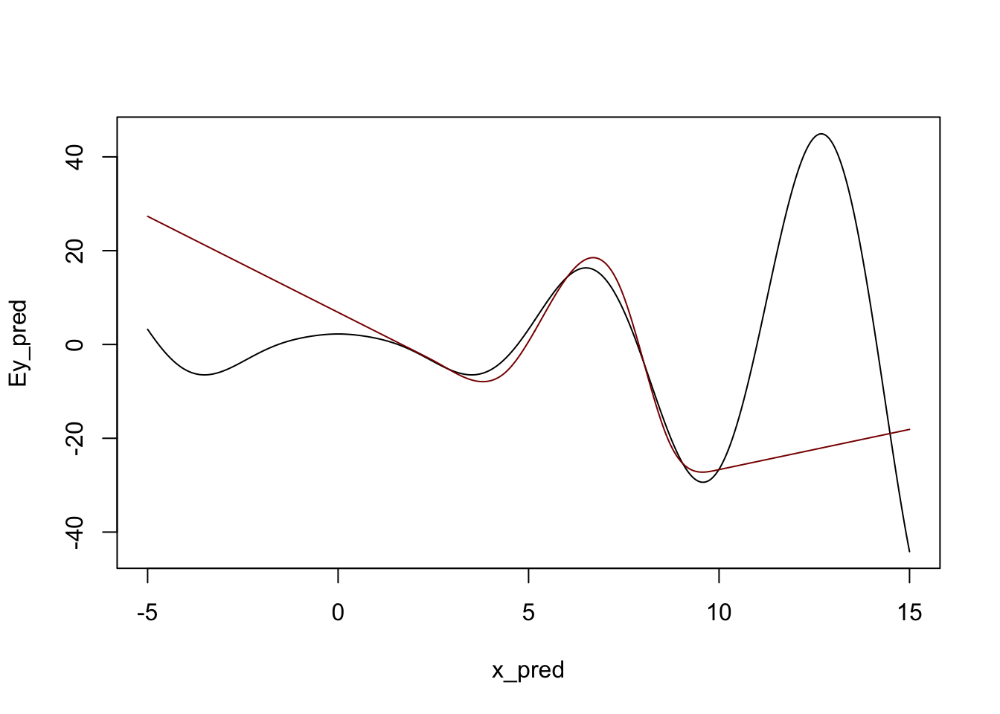
Admittedly, not ideal, but it will do. In particular, note that outside of the ‘data region’, we fall back on a nice comfortable
(You can repeat this process with the slightly more common \(b\)-splines, but the differences aren’t huge.)
library(splines)
m <- lm(y ~ bs(x, df=5))
y_hat <- predict(m, data.frame(x = x_grid))
plot(x, y, xlim=range(x_grid))
lines(x_grid, Ey_grid)
for(i in 1:5){
lines(x_grid, bs(x_grid, df=5)[,i] * coef(m)[-1][i], col=i+1)
}
y_pred <- predict(m, data.frame(x = x_grid))
lines(x_grid, y_pred, col="red4", lwd=2)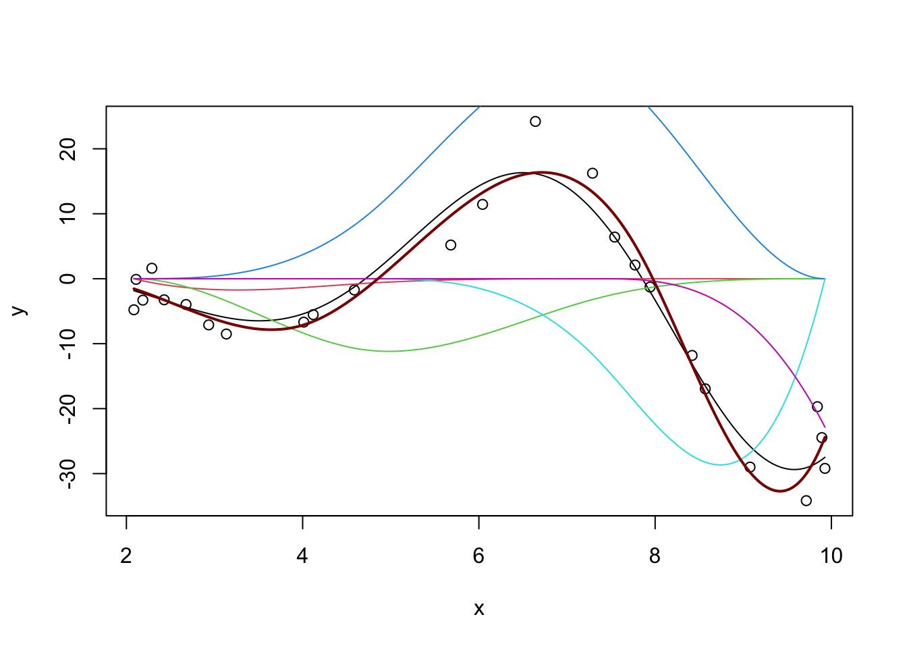
For a ‘full-strength’ version of spline fitting, you can use the mgcv package:
Family: gaussian
Link function: identity
Formula:
y ~ s(x)
Parametric coefficients:
Estimate Std. Error t value Pr(>|t|)
(Intercept) -5.7722 0.5935 -9.725 5.08e-08 ***
---
Signif. codes: 0 '***' 0.001 '**' 0.01 '*' 0.05 '.' 0.1 ' ' 1
Approximate significance of smooth terms:
edf Ref.df F p-value
s(x) 8.402 8.895 58.6 <2e-16 ***
---
Signif. codes: 0 '***' 0.001 '**' 0.01 '*' 0.05 '.' 0.1 ' ' 1
R-sq.(adj) = 0.956 Deviance explained = 97.1%
GCV = 14.116 Scale est. = 8.8068 n = 25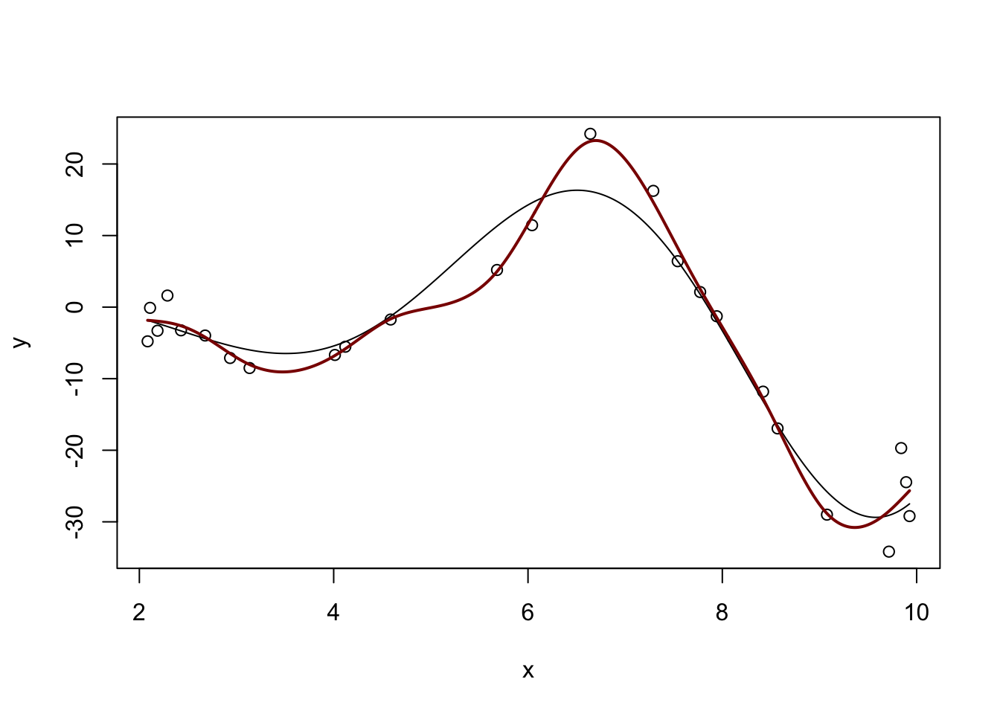
Run ?s to see the many features of the mgcv package. mgcv also includes several specialized splines (e.g. periodic) which you may find useful in some problems.
Splines are not normally consider a ‘machine learning’ tool but they are incredibly useful in applied statistics work. (The two methods you will rely on most from this class are spline regression and random forests.)
\(\ell_1\)-Filtering
Kernel Methods
Manual feature expansion
We can think of feature expansion as mapping our data to a higher-dimensional space \(\Phi: \R^p \to \R^P\) and fitting a linear model there. As we have seen above, splines and their kin provide a useful way of constructing the mapping \(\Phi\), but we are still constrained to work with a fairly restricted type of problem.
Can we generalize this formally to more interesting maps \(\Phi(\cdot)\)? Yes - via kernel methods!
Ridge without coefficients
Before introducing kernel methods formally, let’s look back to ridge regression. We showed that the ridge solution is given by
\[\hat{\beta}_{\text{Ridge}} = (\bX^T\bX + \lambda \bI)^{-1}(\bX^T\by)\]
Some nifty linear algebra will let us rewrite this as
\[\hat{\beta}_{\text{Ridge}} = \lambda^{-1}\bX^T(\bX\bX^{\top}/\lambda + \bI)^{-1}\by = \bX^{\top}(\bX\bX^{\top}+\lambda \bI)^{-1}\by\]
You can prove this using the Woodbury Matrix Identity or we can just check it for a single data set and trust that it generalizes:
n <- 100
p <- 5
X <- matrix(rnorm(n * p), nrow=n, ncol=p)
Ey <- X[,1] + sqrt(X[,2]^2 + 5) + 0.1 * X[,3]^3 + cos(abs(X[,4])) + 1/(abs(X[,5]) + 3)
y <- Ey + rnorm(n, sd=sqrt(0.25))
lambda <- 2
eye <- function(p) diag(1, p, p)
beta_hat_ridge <- solve(crossprod(X) + lambda * eye(p), crossprod(X, y))
beta_hat_ridge_alt <- t(X) %*% solve(tcrossprod(X) + lambda * eye(n)) %*% y
cbind(beta_hat_ridge, beta_hat_ridge_alt) [,1] [,2]
[1,] 0.60970877 0.60970877
[2,] -0.34956024 -0.34956024
[3,] 0.36773761 0.36773761
[4,] 0.06441518 0.06441518
[5,] -0.26131695 -0.26131695So they are the same! But why did we do this?
It is sometimes a bit more computationally efficient if we have to invert an \(n \times n\) matrix instead of a \(p \times p\) matrix, but there are faster methods if we’re really interested in speed.
Note that, if we want to make a ridge regression prediction now for a new \(\tilde{\bx}\), we just need to compute:
\[\begin{align*} \hat{\beta}_{\text{Ridge}}^T\tilde{\bx} &= \left[\bX^{\top}(\bX\bX^{\top}+\lambda \bI)^{-1}\by\right]^T\tilde{\bx} \\ &= \left[\by^T(\bX\bX^{\top}+\lambda \bI)^{-T}\bX\right]\tilde{\bx} \\ &= \by^T(\bX\bX^{\top}+\lambda \bI)^{-1} \bX\tilde{\bx} \end{align*}\]
Intuitively, recall that the inner product of two vectors measures the angle between them and can, up to some scaling, be used as a ‘similarity’ measure. This result essentially says that our prediction on a new data set is a weighted average of the training data, with weights based on similarity of the new point with the training data. This is not a crazy structure…
If we look closer, we see that we only need to compute products of the form \(\bx_1\bx_2\) to make this work. This is where the magic of kernels lies.
Kernel Trick
Earlier, we considered non-linear regression by feature expansion, where we replaced \(\bX\) by \(\Phi(\bX)\), where \(\Phi: \R^p \to \R^P\) maps to a higher-dimensional space (applied row-wise). We can use this mapping in our new ridge formula to get our non-linear predictions as
\[\begin{align*} \hat{y}(\tilde{\bx}) &= \by^T(\Phi(\bX)\Phi(\bX)^{\top}+\lambda \bI)^{-1} \Phi(\bX)\Phi(\tilde{\bx}) \end{align*}\]
Longer, but not necessarily better. If \(P\) is very large, computing with \(\Phi(X)\) can be incredibly expensive.
It turns out, however, that we never need to actually form \(\Phi(X)\), we only need \(\kappa(\bx_1, \bx_2) = \Phi(\bx_1)^T\Phi(\bx_2)\). If we can compute \(\kappa\) directly, we never need to work with \(\Phi\).
Functions that allow this are called (Mercer) kernels and they are just a little bit magical.
If we let \(\K = \Phi(X)\Phi(X)^{\top}\) be defined by \(\K_{ij} = \kappa(\bx_i, \bx_j)\), then we can write our feature-augmented ridge regression as:
\[\hat{y}(\tilde{\bx}) = \by^T(\K+\lambda \bI)^{-1} \kappa(\bX, \tilde{\bx})\]
If we break this apart, we see that our predictions at the new point \(\tilde{\bx}\) are essentially just weighted averages of our original observations \(\by\), weighted by the similarity between the new point and our training points \(\kappa(\bX, \cdot)\). This intuition is super important and we’ll dig into it further below.
Let’s try out Kernel(ized) Ridge Regression:
library(kernlab)
## Define a kernel function - we'll spell this out below.
rbf <- rbfdot(sigma = 0.05)
## calculate kernel matrix
K <- kernelMatrix(rbf, X)
dim(K)[1] 100 100Note that this is a \(n \times n\) matrix - not a \(p \times p\) matrix!
We can now use this to make predictions:
krr <- function(x, lambda=1) {
crossprod(y, solve(K + lambda * eye(n), kernelMatrix(rbf, X, x)))
}
krr_MSE <- mean((y - krr(X))^2)
print(krr_MSE)[1] 0.4474189This is better than the OLS MSE:
Why? How is this not a contradiction of everything said before.
But how do we actually do kernel multiplication?
There are many kernel functions in the world. The most common are defined by:
- \(\kappa(\bx_1, \bx_2) = \bx_1^{\top}\bx_2\). This is the linear kernel, equivalent to non-kernel methods
- \(\kappa(\bx_1, \bx_2) = (\bx_1^{\top}\bx_2 + c)^d\). This is the polynomial kernel, equivalent to fitting polynomial regression up to degree \(d\) with all cross products. (The role of \(c\) is tricky, but it essentially controls the relative weight of the higher and lower order terms)
- \(\kappa(\bx_1, \bx_2) = e^{-\sigma^2\|\bx_1 - \bx_2\|^2}\). This is the squared exponential or radial basis function (RBF) kernel; it is very popular in spatial statistics, where it is closely related to a method known as kriging.
While the first two kernels give us a natural \(\Phi(\cdot)\) mapping, the \(\Phi(\cdot)\) for the RBF kernel is actually infinite dimensional: it lets us fit function classes we could not fit without the kernel trick.
For even more kernels, see:
Much of our current understanding of deep learning is based on specialized kernel methods:
- The Neural Tangent Kernel
- Kernel Methods for Deep Learning
- Gradient Descent as a Kernel Machine (This paper is a bit controversial)
This blog is a particularly nice (but still somewhat technical) introduction to the Neural Tangent Kernel and its relationship to neural networks.
Spline theory has also found use to explain ReLU (piecewise linear activation) neural networks:
- Mad Max: Spline Insights into Deep Learning
- Representer Theorems for Neural Networks and Ridge Splines
We can also kernelize some of the other methods we’ve studied in this course.
Notably, we can kernelize \(K\)-Nearest Neighbors to get “KKNN” if we modify the definition of distance used to be “kernel-ish.” We first recall that we can write distances solely in terms of inner products:
\[\begin{align*} \|\bx_1 - \bx_2\|_2^2 &= (\bx_1 - \bx_2)^T(\bx_1 - \bx_2) \\ &= \bx_1^T\bx_1 - \bx_2^T\bx_1 - \bx_1^T\bx_2 + \bx_2^T\bx_2 \\ &= \bx_1^T\bx_1 - 2\bx_1^T\bx_2 + \bx_2^T\bx_2 \\ \implies \text{Kernel Distances} &= \kappa(\bx_1, \bx_1) - 2\kappa(\bx_1, \bx_2) + \kappa(\bx_2, \bx_2) \end{align*}\]
If we compute distances this way for a given \(\kappa\), we get kernel KNN. This is particularly nice when we have kernels that capture specific behaviors (e.g., periodic or embedded categorical) that we can’t really treat as Euclidean.
Trade-Offs between Linear and Non-Linear Methods
Having developed some tools for non-linear regression, let’s step back and ask whether they are worthwhile. Recall our error decomposition:
\[\MSE = \text{Irreducible Error} + \text{Variance} + \text{Model Bias}^2 + \text{Estimation Bias}^2\]
We have already discussed how tools like ridge and lasso let us remove variance at the cost of (estimation) bias.
We argued that this was a worthwhile trade when the problem had a lot of ‘innate’ variance, either from having large noise variance (\(\V[\epsilon] \gg 0\)) or from having many features. In particular, use of some sort of shrinkage (ridge or lasso penalization) was essential in the ‘high-dimensional’ case (\(p > n\)) where OLS had so much variance that it was not even uniquely defined. We also argued that, as we got more and more data (\(n \to \infty\)), the variance took care of itself in the usual statistical way.
These lessons generalize to the non-linear vs linear debate as well. Choosing to use a linear model is itself a variance reducing choice - there are ‘more’ curves than lines in some sense. If we restrict our attention to linear models only, we are potentially accepting some Model Bias, again with a hope of reducing variance to get overall better performance. As such, the same intuition as above applies: linear models are preferred when variance is the primary concern, either from noisy data or from small data; as we get more data, variance decreases naturally, so going to non-linear models reduces bias, giving overall smaller error.
In the non-linear context, the ‘estimation bias / variance’ trade-off remains, but modern tools like mgcv essentially handle this automatically for us. It is of course still there, but mgcv has some nifty auto-tuning built-in.5
Footnotes
Though it’s more feasible in certain scientific scenarios than you might expect. Cite the SInDy papers…↩︎
If you know your neural networks, the idea of a function that is zero for part of the range and non-zero elsewhere might be quite evocative. You certainly aren’t wrong.↩︎
In other classes, you may have been taught that polynomial regression is a linear model. It is definitely linear in the sense that that class would have used (linear in \(\by\)) but we’re using a different sense here. The core insight of that analysis - that a non-linear function can be expressed as a linear combination of non-linear parts - will appear several times in these notes.↩︎
In Python, the
statsmodelspackage also implements LOESS fits.↩︎If you want to go much deeper into the practical use of additive (spline) models, Simon Wood’s book Generalized Additive Models is fantastic.↩︎